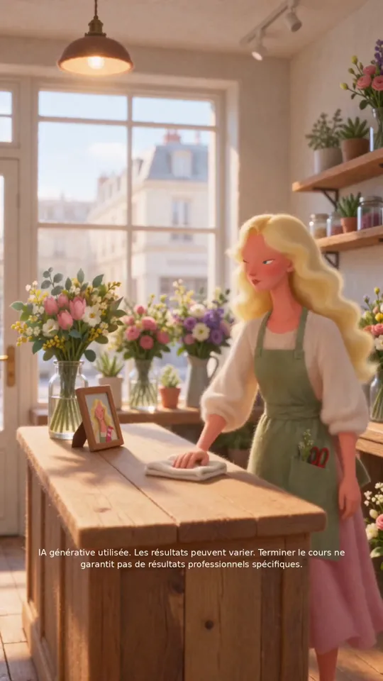

Подходит Франции частично
Идея ложится на Францию, исполнение подводит: ошибки во французском, английская заставка и «американская» героиня выдают адаптацию.
- 2:10
- 9:16
- Анимация «валяная шерсть»
- Французский закадр
01Сильные стороны
Узнаваемая боль с конкретикой
«Та же витрина, что на прошлой неделе», «продала два, может, три». Диагноз точный: ремесло есть, не хватает умения рассказать о себе. Владелец малого бизнеса узнаёт себя в первые 15 секунд.
Интрига держит до раскрытия
Незнакомец в шляпе и записки создают вопрос «кто это?». Ответ — Coursiv в телефоне на 1:05. Продукт показан как добрый наставник, а не сложная технология.
Механика показана, а не описана
Одно задание в день: сфотографируй букет, добавь синий чертополох, которого нет у соседей. Сразу за этим — результат: покупатель с улицы и запрос на оформление мероприятия.
Возражения сняты до призыва
«Я и так иногда пощу» → «постить без плана — как цветы в вазе без воды». «Нет времени» → 10 минут в день. «Сложно» → «не нужно понимать, почему это работает, просто не пропускай дни».
Анимация и мягкий призыв
Валяная анимация выделяется в ленте и снимает эффект «зловещей долины» у ИИ-людей. Призыв — пройти квиз и «начать завтра», порог входа минимальный.
02Аудитория и рынок
Кто
Женщины 28–50 лет: флористки, пекари, владелицы кофеен и салонов. Ремеслом владеют, маркетингом — нет.
Боль
Товар хороший, но о нём не знают. Непонятно, что постить, нет времени, страшно, что технологии — это сложно.
Обещание
Каждый день готовое задание: 1 фото, 1 текст, 10 минут.
Сегмент
Commerce de proximité: локальный B2C-микробизнес, продвижение в Instagram и Facebook, холодная аудитория.
Момент для рынка хороший: по барометру France Num 2025 ИИ используют больше четверти французских компаний, и доля удвоилась за год. Ролик обращается к тем, кто ещё не начал.
03Насколько ложится под Францию
Оставить
Сюжет в духе «Амели»
Тайный доброжелатель, который меняет жизнь соседей маленькими знаками, — понятный французам культурный код. Записки от руки усиливают его.
ИИ помогает, а не заменяет ремесло
«Букеты я делаю сама, помощь нужна, чтобы рассказать». Это точно под французский скепсис: ИИ доверяют 33% французов против 46% в мире (KPMG, 2025).
Визуальные коды
Османовские фасады, брусчатка, деревянная витрина, тёплый утренний свет, лавка квартала.
Тон и метафоры
Мягкий, поэтичный тон и метафора «ваза без воды» из мира героини.
Поменять
Английская заставка «AI MARKETING BOT»
По закону Тубона рекламный текст во Франции должен быть на французском. Вариант: «Ton coach marketing IA». И лучше обещать результат, а не «бота».
Ошибки во французских субтитрах
Для французской аудитории это первый сигнал «машинный перевод».
- 0:51
du chaton bleudu chardon bleu - 0:53
ce boquetce bouquet - 1:06
quelqu'un déporsaitquelqu'un déposait - 1:12
Je sais sûr que…Ce que je sais, c'est que… - 1:53
au lieu de ce qu'elle est avant de dormirau lieu de scroller avant de dormir - весь ролик
5minutes, non?5 minutes, non ?
Типаж героини
Блондинка с пропорциями диснеевской принцессы читается как американский мультфильм. Лучше шатенка 30–40 лет, натуральная, чуть уставшая — как настоящая флористка из квартала.
Незнакомец в плаще
Мужчина, который каждое утро смотрит на женщину через витрину, может читаться как слежка. Лучше сделать помощника сказочным (тень, свет, бумажная птица) или сразу связать записки с уведомлениями в телефоне.
ИИ-вывеска и хук
Нечитаемая вывеска «HOURSAIH YOINNE» на 0:22 — заменить на настоящее название лавки. Начать с самой сильной фразы «J'en ai vendu deux. Peut-être trois.» и сократить ролик с 2:10 до 45–60 секунд.